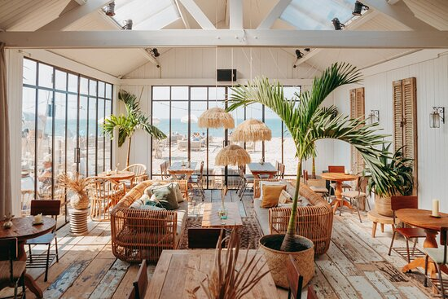

Restaurants in Noordwijk
De Branding
Beachclub Branding in het schilderachtige Noordwijk aan Zee nodigt je uit voor een relaxte strandervaring met verleidelijke aroma's van heerlijke koffie en een uitgebreid menu voor ontbijt, lunch en diner. Of je nu op zoek bent naar een culinaire verwennerij tijdens een zonovergoten dag of een knusse ontsnapping tijdens de wintermaanden, waar de Beachclub verandert in een sfeervolle Winter Lodge. En vergeet niet, zelfs bij onstuimig weer biedt het binnenrestaurant een warm en comfortabel toevluchtsoord met een adembenemend uitzicht.
Beachclub C
Verscholen in de Noordwijkse Zuidduinen met een panoramisch uitzicht op zee ligt Beachclub C. Verwacht heerlijke gerechten met een mediterrane twist, een uitgebreide wijn & cocktailkaart en een ultiem vakantiegevoel. Geniet met vrienden van de lounge onder de pergola met vuurhaartjes en een lekkere cocktail. Of kom uitgebreid eten op het terras met een prachtig uitzicht op zee. Daarnaast is het heerlijk genieten in de binnentuin. Verscholen in een duinpan omringd door traditionele kleedhokjes kan je de hele dag van de zon genieten. Met de Cabanas en luxe zonnebedden is dit absoluut geen straf!
Tulum
Binnen in de idyllische wereld van Tulum Noordwijk, waar de zonnige vibe van het Mexicaanse Tulum harmonieus samensmelt met de serene schoonheid van de Nederlandse kust. Laat je verrassen door het uitgebreide menu, dat een kleurrijke reis door de Mexicaanse keuken biedt, of je nu geniet van een smaakvolle brunch, een gezellig samenzijn met vrienden of een romantisch diner voor twee. Hier, aan de kust van Noordwijk, ontmoeten de krachtige smaken van Mexico en de rustgevende atmosfeer van de Nederlandse kust elkaar, waardoor Tulum Noordwijk een onvergetelijke bestemming wordt voor fijnproevers en levensgenieters.
Witsand
Noordwijk nodigt je uit in een culinair paradijs waar verfijnde smaken samensmelten met de rustgevende ambiance van de Nederlandse kust. Verken een veelzijdig menu, ideaal voor een ontspannen brunch, een gezellig samenzijn met vrienden of een romantisch diner bij zonsondergang. De warme en sfeervolle inrichting van Witsand Noordwijk creëert een atmosfeer waarin elk gerecht tot leven komt als een kunstwerk op je bord. Laat Witsand Noordwijk je leiden op een verrukkelijke reis waar gastronomie, stijl en de kust elkaar ontmoeten in perfecte harmonie.